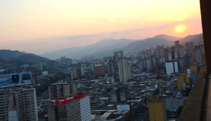
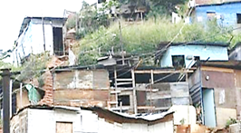
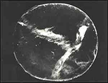
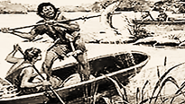
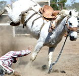
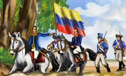

Manual de prevención visual

Por: Omar Barrientos
Fecha: 26/07/2021
Una visita al “Mundo de la visión” se refiere a todas las vivencias, aprendizaje y observaciones establecidas a través del órgano visual y también a sus partes y funciones del ojo.
Temas tratados con la profundidad científica necesaria, pero descritos en un lenguaje sencillo, propio del periodismo científico, que el autor Omar Barrientos Vargas maneja con maestría.
Con la lectura de este libro, el conocimiento científico y sus sencillas explicaciones, el lector disfrutará.
Este libro “Por el mundo de la visión” forma parte de la colección “La Buena Visión” del mismo autor que incluye:
1.- “Manual de prevención visual”,
2.- “Ética del optometrista”,
3.- “Historia de la Optometría en Venezuela”, y
4.- “Por el mundo de la visión”.
descargar libro
Por el mundo de la visión

Por: Omar Barrientos
Fecha: 08/02/2021
Por el mundo de la visión, nos lleva a un recorrido sencillo y fácil de comprender; de forma abierta aproxima al lector a los temas básicos
e importantes en la comprensión de elementos anatómicos y funcionales del ojo y el sistema visual.También aborda desde el punto de vista práctico,
sin profundizar en complejas teorías, los problemas o defectos visuales de mayor frecuencia en la población.
descargar libro
Antecedentes Mundiales e historia de la Optometría en Venezuela tomo I

Por: Omar Barrientos
Fecha: 26/07/2021
Sin mencionar a los ciegos de nacimiento o a quienes por procesos patológicos o accidentes, perdieron
su visión o parte de la misma, los defectos visuales existieron desde los albores mismos de la humanidad.
Tal vez muchos de ellos como producto de procesos visuales, indebidamente desarrolladosen el transcurso de
la transformación del “mono” en hombre, o a lo mejor ya los poseían estos antepasados nuestros o quizás como
combinación de ambas situaciones, o adquiridos más adelante por otros múltiples factores. Sobre esto hay
y habrá mucho por indagar y presumir aún, pero sobretodo, sin duda alguna, los seres humanos con deficiencias
en su visión de fácil, tratamiento hoy día, gracias a la indicación de lentes, debieron nacer, vivir y morir
con su defecto de la vista, sin que nada, ni nadie pudiese hacer algo para remediarlos.
descargar libro
Antecedentes Mundiales e historia de la Optometría en Venezuela tomo II
Por: Omar Barrientos
Fecha: 26/07/2021
En el tomo anterior, el numero I, se presentaron varios de los principales antecedentes mundiales de la Optometría, sus inicios en el país
y las primeras directivas del Colegio de Optometristas de Venezuela, desde la primera de Buenaventura Briceño Belisario en 1949-60, hasta la de Omar Barrientos Vargas 1979- 83.
En este tomo II se presentan otras directivas del COV y su actuar, en los períodos comprendidos entre 1983 de a 1993-95 de Roberto Matos.Se deben considerar estos períodos,
siguiendo los pasos de sus antecesores, descritos en el tomo I como épocas de lucha tras la búsqueda de una consolidación de la Optometría en Venezuela, como profesión de la salud
visual, independiente de la medicina, requerida de altos valores éticos, una práctica idónea y el ejercicio en salud pública, a la par de la búsqueda de la oficialización de sus estudios.
descargar libro
Catia , el cacique rebelde

Por: Omar Barrientos
Fecha: 26/07/2021
La historia del jefe Catia, del cacique rebelde, del indio compañero de Guaicaipuro y otros líderes indígenas de las tierras descubiertas, originarias, de la confrontación
de culturas entre el viejo mundo con atisbos de civilización y la llamada América, la del cono sur, la de la pequeña Venecia, la de Venezuela, comenzó a más de dos siglos,
antes del nacimiento de Simón Bolívar, El Libertador… Pero tal vez Catia nació con el ADN libertario, muy propio de esta rica geografía sureña.
descargar libro
TIRAMA, EL HIJO DEL CACIQUE CATIA

Por: Omar Barrientos
Fecha: 26/07/2021
Los españoles causaron la muerte, la esclavitud, el vasallaje y la extinción de la cultura, idiomas, costumbres y religión de los indígenas caraqueños. Gracias a la espada, la cruz y a las epidemias traídas por estos invasores.
Tirama, hijo del cacique Catia, lucha contra el oprobio. Lisiado, convaleciente de la viruela es capturado y remitido a una encomienda. Ansioso de libertad huye. Es recapturado y duramente castigado.
Desea vengarse y liberarse. Transcurre el tiempo, sin lograrlo. Muere con el deseos de haber sido como su padre o el gran Guaicaipuro.
300 años después las ansias de libertad de los pueblos caraqueños y venezolanos son hechas realidad por “El Libertador”, Simón Bolívar.
descargar libro
Mestizo y el tesoro de Guaicaipuro

Por: Omar Barrientos
Fecha: 26/07/2021
su madre indigena violada por los españoles dio a luz un mestizo. de grande se hizo domador de potros como su padre putativo.
Un indegena tequeño le revelo donde estaba el tesoro de Guaicaipuro, lo desenterro y lo uso. convertido en adinerado y poderoso
quizo ser como los blancos, cuestión que no pudo, soño y termino dejando su fortuna en manos de una blanca.
descargar libro
Un andino en la Independencia

Por: Omar Barrientos
Fecha: 26/07/2021
Emeterio, un mestizo, cuyos recuerdos sobre sus antepasados blancos como indios estaban perdidos en el desconocimiento de sus orígenes, vivía con su madre en un rancho en la hacienda de don Marcos Manchego. Allí había crecido y comenzado a trabajar desde niño, como todos los demás de ese o cualquier otro predio.
Cuando, llamaron a los presentes a ingresar a las filas del ejército libertador, lleno de ilusiones y fervor patrio, de inmediato lo decidió, se iría con ellos.
Descargar Libro